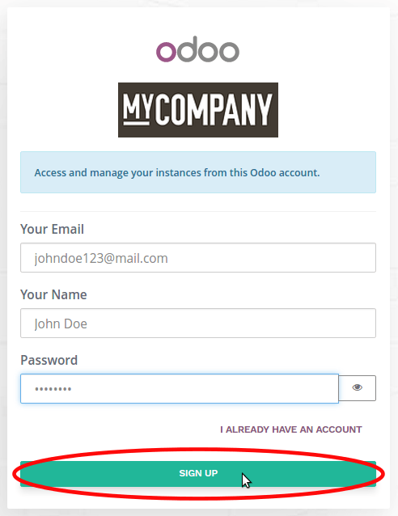
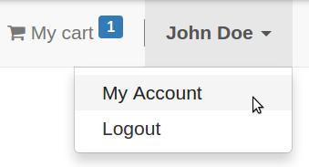
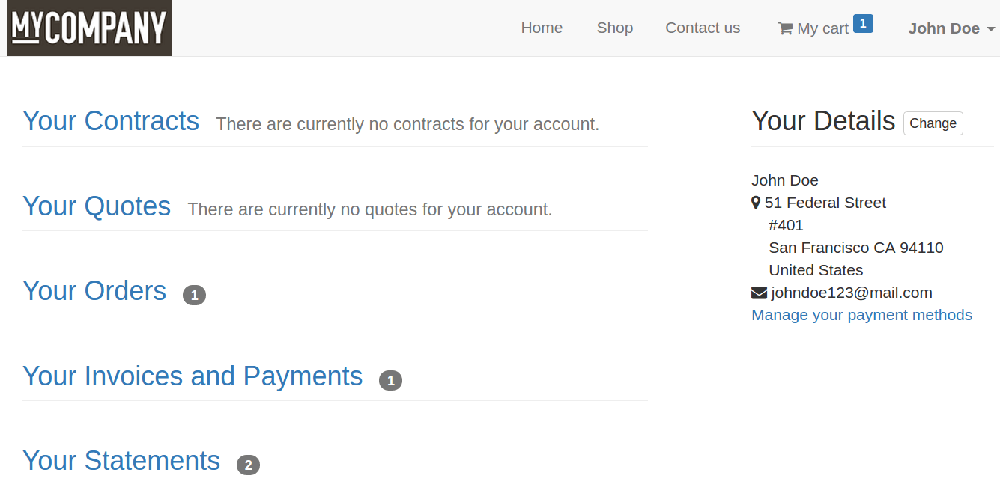

It has never been so easy for your customers to access their customer account. Forget endless signup forms, Odoo makes it as easy as ABC. They are suggested to sign up (name, email, password) when the order is placed, and not before. Indeed, nothing is more annoying than going through a signup process before buying something.
Sign up
The invitation to sign up shows up when the customer wants to visualize the order from order confirmation email.
Customer account
Once logged in the customer will access the account by clicking My Account in the login dropdown menu.
THere they find all their history. The main address (billing) can also be modified.
Note
If the customer is set as a contact of a company in your address book, they will see all the documents whose the customer belongs to this company.